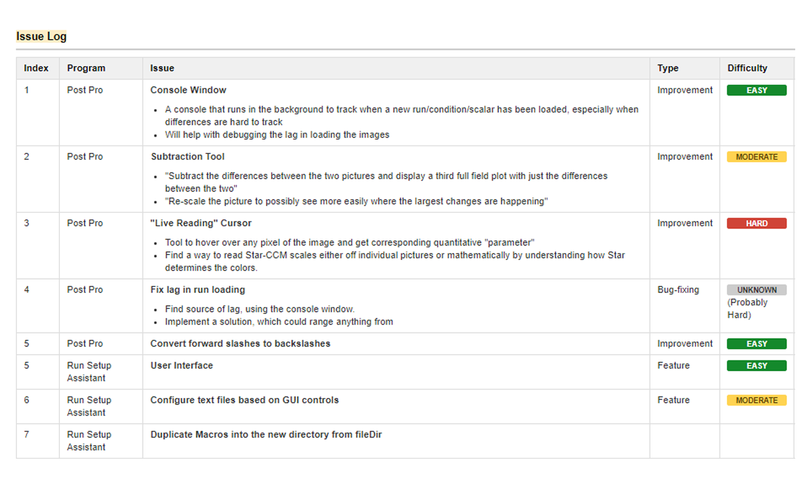

Contents
- Software Engineering [+]
- Print Design [+]
Software Engineering
Introduction
During my sophomore year, I was tasked with building applications to assist with deploying and analyzing computational fluid dynamics simulations on a
new simulation pipeline, which involved the use of Star-CCM+ on a Linux cluster.
The Problem
The first problem involving this set-up was the lack of an interface to qualitatively analyze results/pictures generated from each simulation. Another
problem that surfaced with the use of this setup was the learning curve to setting up simulations, as most runs
had to be executed using Linux commands, with CAD geometry being set up using text files, all of which heavily contributed
to the error-proneness of this setup
Solution
In response to these problems, we created two applications to assist with deploying runs on the cluster, and organizing the results from the simulations so they are easy to analyze qualitatively. The applications were developed using Java, since it was taught in Introductory
Computer Science classes, and thus a language project members could contribute in. The first application, The Post Pro Viewer, allows the user to compare results from two different runs or configurations within the same run. The application also had the option to adjust the zoom and a scroll to "sweep" through images.
The second application, The Run Setup Assistant, allows the user to create files required to deploy a simulation on a virtual machine cluster for Star-CCM+ to use. It gives the user options to define the condition and the geometry of the run, as well as the CAD files of the parts
that constitute the car. It also allows users to import parts from previous simulation runs.
Methodology
After getting acquainted with Agile methodologies during my internship with Amadeus, I wanted to create a platform where developers had the autonomy of working
on a part of the application of their choice, and where users (other engineers on the Aerodynamics subsystem) could request features and get estimates on when
that feature would be incorporated into the program. For this, I created an Issue Log on the Confluence, which allowed stakeholders to monitor progress on the
application's development.

Print Design
- Business Presentation
The business presentation is a static event in FSAE competitions, where teams pretend to be motorsports
coming up, and pitch their business plans to judges from the motorsports industry who in turn, attend the presentations
as investors. My contribution to the business presentation was developing various assets, including mockups for the company's
website, as well as designs for the pitchbook we hand out to judges in order to provide them more information about the
than what they would normally absorb during a pitch.